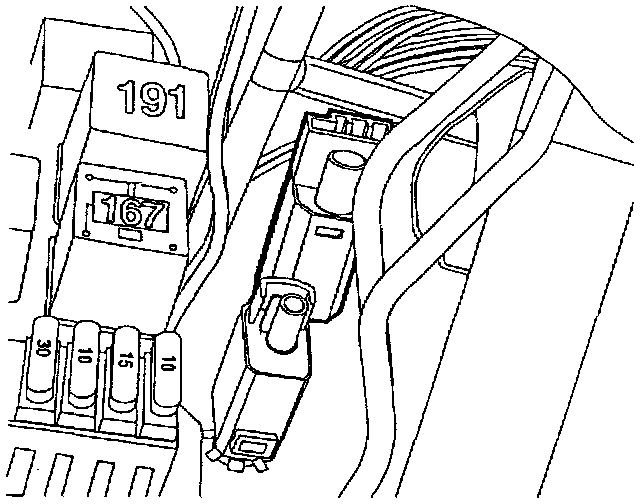

Operation CHARM
: Car repair manuals for everyone.
Home
>>
Volkswagen
>>
1997
>>
GTI (1H1) V6-2.8L (AAA)
>>
Repair and Diagnosis
>>
Transmission and Drivetrain
>>
Clutch
>>
Clutch Switch
>>
Locations
Clutch Switch: Locations
F123, G, G6, F194:
Component Location View
F194:

Component View
F194 Clutch Pedal Position (CPP) Switch
-
On clutch pedal bracket, above clutch vacuum vent valve switch F36